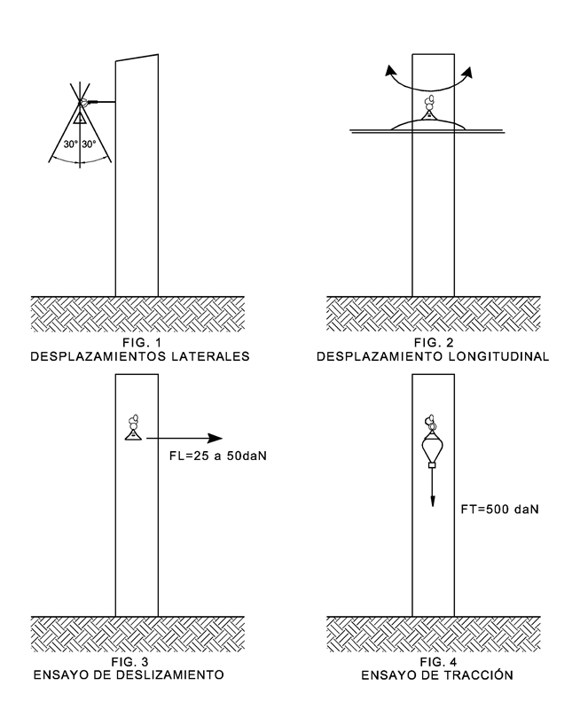

Siempre es más fácil conocer las normas ENEL-CODENSA
Rolex Rolex gold watch, compared with ordinary materials, gold watches are often expensive, but the replica rolex gold watch has the role of swiss replica watches hedging, so that it often becomes the first choice for collectors. The gold watch has value in the world, largely because the omega replica watch brand launched a commemorative limited edition watch or a replica hublot complex movement process or artistic attainments deep watches, mostly preferred gold precious metals such material. These watches tend to have a strong hedging function, therefore, Rolex Rolex gold watch reputation.

ET355 Grapa de suspensión aisladas para redes aéreas trenzadas B.T
Datos adicionales
Número de especificación
ET 355
Fecha de vigencia
02/12/2019
Herramientas adicionales
- Contenido Ocultar
- 1. OBJETO
- 2. CONDICIONES DE UTILIZACIÓN
- 2.1. LUGAR DE INSTALACIÓN
- 2.2. CONDICIONES CLIMÁTICAS
- 3. MATERIAS PRIMAS
- 4. DETALLES CONSTRUCTIVOS
- 5. MARCACIÓN Y EMBALAJE
- 5.1 MARCACIÓN
- 5.2 EMBALAJE
- 6. ENSAYOS
- 6.1 ENSAYOS TIPO
- 6.1.1 Verificación visual y dimensional
- 6.1.2 Ensayo de deslizamiento
- 6.1.3 Ensayo de tracción
- 6.1.4 Ensayo de envejecimiento climático y corrosión
- 6.1.5 Ensayo de rigidez dieléctrica
- 6.2 PRUEBAS DE RECEPCIÓN
- 7. DOCUMENTACIÓN E INFORMACIÓN TÉCNICA
- 8. CRITERIOS DE ACEPTACIÓN O RECHAZO
- 9. FIGURAS
1. OBJETO
Esta especificación técnica establece las condiciones que deben satisfacer las grapas de suspensión para líneas aéreas trenzadas de baja tensión en sistemas de distribución trifásicos con neutro conectado rígidamente a tierra. Los conductores de las fases son de aluminio y el neutro mensajero de aluminio o aleación de aluminio.2. CONDICIONES DE UTILIZACIÓN
2.1. LUGAR DE INSTALACIÓN
Las líneas aéreas de baja tensión sobre las cuales se instalarán la grapa de suspensión estarán constituidas por cables trenzados aislados con polietileno reticulado.Los calibres normalizados son:
| # | Global | SAP | Descripción |
| 1 | GSCC009/005 | 6762330 | Netro Auto soportado Al 1x35+54,6 mm2 |
| 2 | GSCC009/006 | ALV2 | Netro Auto soportado Al 2x35+54,6 mm2 |
| 3 | GSCC009/007 | ALV3 | Netro Auto soportado Al 2x50+54,6 mm2 |
| 4 | GSCC009/008 | ALV4 | Netro Auto soportado Al 3x25+54,6 mm2 |
| 5 | GSCC009/009 | ALV5 | Netro Auto soportado Al 3x35+54,6 mm2 |
| 6 | GSCC009/011 | ALV6 | Netro Auto soportado Al 3x70+54,6 mm2 |
| 7 | GSCC009/012 | 6762329 | Netro Auto soportado Al 3x95+54,6 mm2 |
| 8 | GSCC009/013 | ALV7 | Netro Auto soportado Al 3x150+80 mm2 |
La grapa debe permitir sujetar conductores de neutro para calibres de 54,6 mm2 y 80 mm2.
2.2. CONDICIONES CLIMÁTICAS
Serán empleados a la intemperie, siendo ésta generalmente de clima cálido y húmedo. Los parámetros de operación son los siguientes:- Altura sobre el nivel del mar: 2 700 m.s.n.m.
- Humedad relativa: 90%
- Temperatura ambiente máxima: desde -5°C hasta 40°C
3. MATERIAS PRIMAS
Las grapas de suspensión estarán construidas con materiales de la mejor calidad para ese fin, debiéndose descartar el empleo de materiales alterables por la humedad, radiación solar y otras condiciones ambientales desfavorables.4. DETALLES CONSTRUCTIVOS
La grapa de suspensión se compone del cuerpo, la mordaza y el eslabón fusible.La grapa será diseñada de tal forma que permita el desplazamiento lateral del conductor en un ángulo de 30° como máximo, a uno y otro lado del plano vertical (Figura 1), y además que, aplicando un esfuerzo longitudinal sobre el conductor, el conjunto describa una traslación paralela (Figura 2).
El material estará libre de grietas, cavidades, sopladuras, defectos superficiales o internos y de toda otra falla que pudiera afectar su correcto funcionamiento.
La grapa de suspensión tendrá los elementos necesarios para lograr los grados de movimiento indicados en las figuras 1 y 2. Los componentes del conjunto de suspensión serán imperdibles entre sí.
La sección del material en la zona de apoyo con el perno de ojo deberá estar inscrita en una circunferencia de 13 mm de diámetro máximo y la abertura deberá permitir el paso de un perno de 16 mm de diámetro como mínimo. Las grapas de suspensión tendrán una longitud máxima de 100 mm entre el punto de apoyo sobre el perno de ojo u otro elemento de sostén y el eje del conductor.
Las grapas de suspensión tomarán sólo al conductor neutro portante y tendrán un diseño racional tal que no origine sobre el conductor esfuerzos concentrados que produzcan su deterioro. La garganta de la grapa donde se aloje el conductor deberá tener un perfil adecuado, sin aristas vivas ni radios de curvatura pequeños, en todos los puntos que puedan tomar contacto con el cable.
5. MARCACIÓN Y EMBALAJE
5.1 MARCACIÓN
El material debe cumplir la siguiente marcación en bajo o en alto relieve. No se acepta pintura ni calcomanía.- Logo del fabricante
- Lote
- ENEL CODENSA
- Mes y año de fabricación
- Rango de uso
5.2 EMBALAJE
Los conjuntos de suspensión, debidamente armados, se proveerán acondicionados dentro de cajas de cartón corrugado o similar resistentes al manipuleo, conteniendo cada una hasta 25 unidades.6. ENSAYOS
6.1 ENSAYOS TIPO
Los ensayos tipo serán efectuados sobre cada nuevo modelo de fabricación o ante cualquier modificación de un modelo ya aprobado.El fabricante deberá efectuar los ensayos tipo indicados en los numerales 6.1.1 a 6.1.4, en unidades idénticas y sobre la cantidad que se determine para cada ensayo, y en el orden indicado.
ENEL CODENSA se reserva el derecho de aceptar los protocolos de ensayo y/o repetirlos. A tal efecto el costo de los ensayos no deberá ser incluido en el precio de las grapas de suspensión, debiéndose cotizar por separado.
6.1.1 Verificación visual y dimensional
Se verificará la correcta terminación, características constructivas e identificación del material, de acuerdo con lo indicado en el numeral 3, y que las dimensiones respondan al plano presentado por el proveedor o fabricante y aprobado por ENEL CODENSA.6.1.2 Ensayo de deslizamiento
Este ensayo se realizará a una temperatura ambiente de 20± 5° C.Las grapas de suspensión se instalarán en condiciones similares a las de servicio. Siguiendo las instrucciones del fabricante (presión de cierre, apriete u otras), se colocará un trozo de conductor neutro mensajero de aluminio o aleación de aluminio calibre 50 mm2, de longitud adecuada para la realización del ensayo. En estas condiciones se aplicará al conductor una carga longitudinal creciente como se indica en la figura 3, hasta que se produzca su deslizamiento.
El deslizamiento se deberá producir con una carga comprendida entre 25 y 50 daN.
6.1.3 Ensayo de tracción
Se instalará la grapa de suspensión en condiciones similares a las de servicio. El esfuerzo mecánico será aplicado verticalmente por medio de un dispositivo adaptado a la garganta de la grapa, como se indica en la figura 4.Se aplicará una carga mecánica de tracción de 500 daN durante 10 minutos, valor al que se llegará entre 1 y 2 minutos con una ley de crecimiento aproximadamente lineal.
Finalizado el ensayo no deberá observarse roturas, deformaciones o defectos que pudieran alterar el normal funcionamiento del conjunto.
6.1.4 Ensayo de envejecimiento climático y corrosión
Estos ensayos se deberán realizar en grapas de suspensión que estén construidos con material sintético, metálico o combinados, según el siguiente detalle:- Ensayo de envejecimiento climático, según Norma ASTM G 26-92, método N° 1, o norma equivalente, para grapas construidas total o parcialmente en material sintético.
- Ensayo de corrosión, para grapas construidas parcialmente con componentes metálicos.
- Ensayo de envejecimiento climático seguido del ensayo de corrosión para los elementos combinados.
Las grapas que por su construcción sean sometidas al ensayo de corrosión, finalizado éste no deberán presentar corrosión localizada.
Además de los ensayos de envejecimiento climático y/o de corrosión, deberán cumplir satisfactoriamente con los ensayos de deslizamiento, de tracción y rigidez dieléctrica descritos en los numerales 6.1.2., 6.1.3 y 6.1.5 respectivamente.
6.1.5 Ensayo de rigidez dieléctrica
Se deberá armar la grapa de suspensión sobre un cable desnudo o varilla metálica, de diámetro 10,65 mm y aplicar entre éste y el cuerpo de la grapa una tensión de 2,5 kV - 60 Hz, con un incremento prácticamente lineal, durante 1 minuto.Se considerará satisfactorio el ensayo si no se aprecian descargas o perforaciones.
Este ensayo se realizará únicamente luego del proceso de envejecimiento climático.
6.2 PRUEBAS DE RECEPCIÓN
Las pruebas de recepción son:Inspección Visual
Verificación Dimensional
Ensayo de Tracción (deslizamiento)
Verificación Certificados de Calidad
7. DOCUMENTACIÓN E INFORMACIÓN TÉCNICA
La información técnica a presentar por el oferente será la siguiente, sin cuyo requisito la oferta podrá no ser tenida en cuenta:- Protocolos de ensayos tipo, según numeral 6.
- Plano y/o catálogo descriptivo con dimensiones y materiales componentes.
- Características físicas y químicas de los materiales.
8. CRITERIOS DE ACEPTACIÓN O RECHAZO
Si el número de elementos defectuosos es menor o igual al correspondiente número de defectuosos definidos a continuación, se deberá considerar que el lote cumple con los requisitos técnicos exigidos por ENEL CODENSA, en caso contrario, el lote se rechazará.Inspección Visual y Dimensional
De acuerdo a la tabla a continuación.
| Tabla inspección visual y dimensional | |||
| Tamaño del lote | Muestra | Aceptado | Rechazado |
| 2 a 8 | 2 | 0 | 1 |
| 9 a 15 | 2 | 0 | 1 |
| 16 a 25 | 2 | 0 | 1 |
| 26 a 50 | 3 | 0 | 1 |
| 51 a 90 | 5 | 1 | 2 |
| 91 a 150 | 8 | 1 | 2 |
| 151 a 280 | 13 | 1 | 2 |
| 281 a 500 | 20 | 2 | 3 |
| 501 a 1200 | 32 | 3 | 4 |
| 1201 a 3200 | 50 | 5 | 6 |
| 3201 a 10000 | 80 | 6 | 7 |
| 10001 a 35000 | 125 | 8 | 9 |
| 35001 a 150000 | 200 | 10 | 11 |
| 150001 a 500000 | 315 | 10 | 11 |
Ensayos Mecánicos
De acuerdo a la tabla a continuación.
| Tabla inspección visual y dimensional | |||
| Tamaño del lote | Muestra | Aceptado | Rechazado |
| 2 a 8 | 2 | 0 | 1 |
| 9 a 15 | 2 | 0 | 1 |
| 16 a 25 | 2 | 0 | 1 |
| 26 a 50 | 2 | 0 | 1 |
| 51 a 90 | 2 | 0 | 1 |
| 91 a 150 | 2 | 0 | 1 |
| 151 a 280 | 3 | 0 | 1 |
| 281 a 500 | 3 | 0 | 1 |
| 501 a 1200 | 5 | 1 | 2 |
| 1201 a 3200 | 6 | 1 | 2 |
| 3201 a 10000 | 8 | 1 | 2 |
| 10001 a 35000 | 8 | 1 | 2 |
| 35001 a 150000 | 13 | 1 | 2 |
| 150001 a 500000 | 13 | 1 | 2 |
9. FIGURAS

.jpg)
ANEXO 1. TABLA DE CARACTERÍSTICAS TÉCNICAS GARANTIZADAS.
| ITEM | CARACTERÍSTICAS TÉCNICAS | OFERTADO |
| 1 | RANGOS DE SUJECIÓN DE LA GRAPA (mm2) | |
| 2 | CUERPO DE LA GRAPA | |
| Material | ||
| 3 | MORDAZA | |
| Material | ||
| 4 | ESLABON FUSIBLE | |
| Material | ||
| Dimensiones | ||
| Para que diámetros de perno ésta diseñado | ||
| 5 | CARGA A LA TRACCIÓN DEL CONJUNTO (daN) | |
| 6 | CARGA DE DESLIZAMIENTO (daN) | |
| 7 | NIVEL DE CORTOCIRCUITO QUE SOPORTA A 1s | |
| 8 | *Diámetros admisibles de mensajero (mm2) |